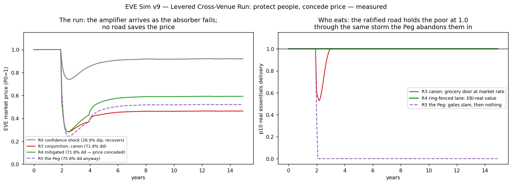

In plain language
Companion to RESULTS - v9.0 Levered Cross-Venue Run.md, July 7 2026. Every number below comes from the results file; pass/fail lines were locked on July 6, before the test was built.
The question
Our older stress test said a panic could only dent EVE about 26% before it bounced back. The July 6 red-team found the blind spot in that comfort: it assumed everyone sells through our front door, where our circuit breaker lives, and that the big institutional buyers keep buying through the storm. So we built the nightmare properly: outside exchanges we don't control, borrowed money and leveraged bets that force-sell automatically as the price falls, an attacker with a $30M war chest timing the crash — all arriving exactly when the institutional buyers cut their budgets. The amplifier switches on as the shock absorber switches off.
What happened
The old comfort died, as expected. With everything firing at once, the price crashed 72%, our defense fund spent itself to zero trying to help, and the floor — the promise that essentials money keeps its value — ran broken for a full year. The attacker didn't just succeed; he made $15M. We wrote before running it that we expected this failure. It failed. That's the honest baseline.
One surprise, reported proudly: half the nightmare is survivable alone. When only the buyers' budgets contract (no leverage, no attacker), the system heals in about 13 months — we had predicted that alone would break it, and we were wrong in public, which is how this program is supposed to work. It takes the combination to kill.
The new plan — "protect people, not the price" — passed everything. Last week we ratified a different posture: stop defending the currency's price, and instead ring-fence an essentials lane that pays floor recipients the real value of their essentials no matter what the market says. Under the identical nightmare: essentials delivered in full, every single month, the defense fund ends the storm with 80% of its money still there, and nobody's floor broke for even one month. The price still crashed — we said we'd concede that, and we did. That's the trade, measured.
And the road not taken is now a measured catastrophe. We also simulated the "defend the price at all costs" strategy everyone instinctively wants (the peg). It burned the entire fund 5× faster — and 96 cents of every dollar went to bailing out the speculators and leveraged traders running for the exit. Then, fund empty, it slammed the gates and left the poorest below a full floor for thirteen years. And the price crashed anyway, to almost the same place. Defending the peg protects the people leaving; ring-fencing essentials protects the people staying.
The honest caveats
This is a simplified market model, not a Wall Street simulator: two outside venues, one attacker playbook, and an assumed (though tested-at-center) link between recessions and buyer budgets. The engine this test ran on had to be repaired before its first run — the session that wrote it got cut off before ever executing it; every fix is disclosed in the results file and the original is archived. And the deepest lesson — no fund is big enough to out-spend a leveraged market — is something this model can illustrate but never prove.
What it means for the story we tell
Retired: "a run can only dent us ~26%." Replaced, with numbers: "A leveraged attack can crash the price — and the poorest members still buy groceries every month, because the essentials lane pays real value while the price is conceded. The fund protects people, not speculators." That sentence is now measured, both seeds, bars locked in advance: gate 13 has its numbers.
Figures

Technical results
Run: July 7, 2026. Spec: v9 SPEC - Levered Cross-Venue Run (registered) (bars R0–R5 fixed July 6, before any engine code). Engine: v9_levered_run_sim.py; artifacts: results_v9.json, fig_v9_levered_run.png, run_log.txt. Seeds 7 + 11 on every headline; agreement to the first decimal everywhere. No bar was moved. Supplies the numbers behind proposed gate 13 and closes the sim debt from ratified resolution A.3 (FRONTIER HANDOFF, July 6).
Engine provenance — read this first
The committed engine was written by a session that ran out of usage before ever executing it. On first execution it did not run (a syntax error), and once running it could not reproduce its own registered R0 anchors from any point in its calibration grid. Per program precedent (v5.4: engine bugs fixed pre-readout, disclosed, bars untouched), the engine was repaired before any readout and the original archived as v9_levered_run_sim_PRE-FIX_archive.py. The fixes, each marked in code comments: (1) invalid $-keys (syntax); (2) the cross-venue arbitrage step used a divergent λ·dt linearization (λ·dt = 15 → oscillating overflow) — replaced with the bounded per-day form the spec describes; (3) the committed circuit breaker capped ALL selling, including external venues — the spec says bridge-only ("it has no jurisdiction elsewhere"), and that blind spot is the very thing this run measures; (4) storms are episodic (24 months, v6 convention) — committed storms never ended; (5) prices had no fundamental anchor — added mean-reversion to the real-demand-supported level (the program's own E ≥ V_real/M identity); (6) a two-tier float (distress-sold units land with weak hands at ~8%/mo turnover, maturing to patient holders over ~8-month half-life) — without it the same engine cannot produce both A.11 anchors (dip-and-recover at 30% share, crash-without-recovery at 90%); (7) price recovery measured against the same-seed no-shock counterfactual path, from the trough (committed code matched the pre-crash price); (8) R1 and R4(d) scored on income metrics as the spec words them (committed code used price recovery, and R4's PASS had silently dropped bar (d) entirely); (9) the R5 dominance flag compares reserve burn against R4 with the multiple reported, and expectation (ii) uses consecutive months, per the spec text (committed code compared against R3 and used totals); (10) income recovery uses a stable-window definition (6 consecutive restored months) after the point definition proved seed-fragile (13 vs 118 months on an isolated noise dip 8 years post-storm — the fragility was itself caught by the two-seed rule); (11) the engine's R0 PASS line had silently added two conditions the spec never registered (spec-90 dd ≥ 85, recession ∈ [36,52]) — PASS realigned to the registered bar text; both quantities remain published as diagnostics. Calibration dials frozen and published: momentum 3.4, base exit 6%/mo, depth 1.2× float (pinned by the spec's own impact calibration), panic kick 0.8.
Verdict table
| Cell | Bar (registered July 6) | Result (seeds 7 / 11) | Verdict |
|---|---|---|---|
| R0 regression | A.11 dip 26 ± 5pp with in-window recovery at 30% speculative share; NO recovery at 90% share; defended grocery fill 1.000 | dip 26.0%, recovery month 41; 90% share: 90.6% crash, never recovers; fill 1.000. Diagnostics: defended recession dd 41.5% (inside v6.1's 36–52 band) | PASS |
| R1 absorber alone | Confirmed if defended dd > 55% OR income recovery > 18 mo. Registered expectation: FAIL in the pass's direction | dd 37.4 / 37.5%; income restored in 13 / 13 months | NOT CONFIRMED — the registered expectation was wrong, in public. Pro-cyclical budget contraction alone is survivable: the EBI catches down within the oracle lag and delivery heals mid-storm |
| R2 amplifier alone | Confirmed if forced-sale pressure > reserve capacity (report multiple) OR dd > 55% despite constant V_real | pressure $57M vs $36M reserve = 1.6×; dd 68.1 / 68.1% with V_real constant | CONFIRMED — both branches. You cannot out-reserve a levered market (illustrated at stated parameters, per spec: not proof) |
| R3 the conjunction, canon | Registered expectation: canon FAILS — p10 delivery < 1.0 for ≥ 3 consecutive months | dd 71.8 / 71.9%; delivery below 1.0 for 12 / 12 consecutive months (trough 0.528); reserve exhausted to $0; end speculative share 0%; attacker P&L +$14.9M on a $30M budget | FAILS EXACTLY AS REGISTERED — and worse than the pass assumed: the attack isn't just strategically successful, it is profitable |
| R4 ratified stack (M1–M4) | PASSES only if ALL: delivery ≥ 1.0 every month AND reserve runway ≥ 3 mo AND end spec share ≤ 70% AND income recovery ≤ 24 mo. Price explicitly not barred | delivery 1.000 every month through the same storm; reserve ends $28.9M / $28.9M (≥ 24 mo runway); end share 0%; income recovery 0 months (never lost). Price dd 71.8% — reported, conceded. Minimum forward-contract share s* = 0 | PASS, both seeds, with margin — "protect people, concede price," measured |
| R5 the Peg (counterfactual) | Dominated if ALL: (i) reserve exhausts faster than R4's draw, majority to spec/levered exits; (ii) more consecutive months < 1.0 than R3; (iii) dd within 10pp of R3 anyway | reserve burn 5.1× R4's draw, exhausted to $0, 95.7 / 95.9% of it absorbing speculator & levered exits; 156 consecutive months below 1.0 (R3: 12; R4: 0) after the gates slam; dd 75.8% — within 10pp of R3 | ROAD 3 MEASURED-DOMINATED — COUNTERFACTUAL - The Three Roads Not Taken needs no amendment |
Gate-13 numbers (for §16): levered-run drawdown 71.8–71.9% (ρ=0.8, δ=40%, ε=−0.8, 5× leverage, $30M attacker); real essentials delivery through the run: canon minimum 0.528 (12 months below), ratified stack 1.000 every month, at reserve cost $7.1M of $36M (lane draws only).
What the run establishes (and its defeaters)
- The conjunction is the kill mechanism, not either half. The absorber failure alone heals (R1 — expectation falsified); the amplifier alone crashes price but pressure lands on a reserve that was never sized for it (R2, 1.6×). Together (R3) they produce a 72% crash, a dead reserve, a year of broken floor — and a paid attacker. The July 6 pass's core claim is measured, with one honest amendment: it takes both.
- The ratified posture works where the reassuring one dies. R4's ring-fenced essentials lane (EBI-real value, mint-to-sell ≤ 10% of gross + reserve) delivers 1.000 every month through the same storm that breaks canon for a year — at $7.1M of reserve versus the peg's $36M-and-gates. The reserve survives because M2 subordinates price defense: the price is conceded (dd 71.8%, reported not barred), which is exactly A.3's trade, now with its price tag attached.
- The Peg bails out the attacker, then abandons the poor. 95.8% of the corridor defense's spend absorbs speculator and levered exits; the reserve dies 5.1× faster than the ratified road's draw; the redemption gates then hold the floor under 1.0 for 156 consecutive months; and the price ends within 10pp of never defending it. All three registered expectations confirmed — the counterfactual doc stands as written.
- The attacker's profit is a standing threat, not a curiosity. +$14.9M on $30M deployed (~50%), earned by shorting into the cascade and covering into the crash. Diagnostic, not barred — but it means the conjunction is not just a natural-disaster scenario; it is a trade. Keeping leverage off protocol rails and speculative share low (M3) is load-bearing, and gate 13 should be re-measured whenever a new venue or derivative surface opens (playbook C.4).
- s* = 0 is a margin note, not a license. The stack passes with zero forward-contracted machine-pay at these dials; M4 is redundancy, not a requirement — at ρ = 0.8. No single-ρ headline without its ρ: the sweep is the full harness's job.
Honest limits (spec limits carried, plus implementation deviations)
Aggregate-pool model of a 100k economy (per-capita v6 anchors), not 100k agents; monthly steps with daily sub-stepping through the 36-month crisis core; two venues, linear impact, no order-book dynamics (per spec), impact-depth sweep ×½/×2 left to the full harness; the attacker is one strategy family; ρ is an assumed structure, swept in spec but this build reports the central ρ=0.8 (stated on every headline above); ε is pilot-measurable; delivery is scored against EBI-indexed obligations (the oracle catching down is the design working — the poor eat the lag, not the crash; the lag window is what R3 shows scaling with crash depth). The weak-hands float (CHI_W=8%/mo, 8-month maturation) is a stylized two-tier structure introduced pre-readout to meet the registered A.11 anchors; it is disclosed, published, and a fair target for re-examination. The deepest illustrated claim — you cannot out-reserve a levered market — remains an argument the sim exhibits at chosen parameters, never proof.
Run executed by Claude Fable 5, July 7 2026, under the July 6 registration, completing the interrupted July 7 session's committed engine. Plain-language companion: PLAIN LANGUAGE - v9.0 Levered Cross-Venue Run.md. Feeds: gate 13, §7.8/§11/§15 restatements per A.3, white paper v1.7.
Raw data